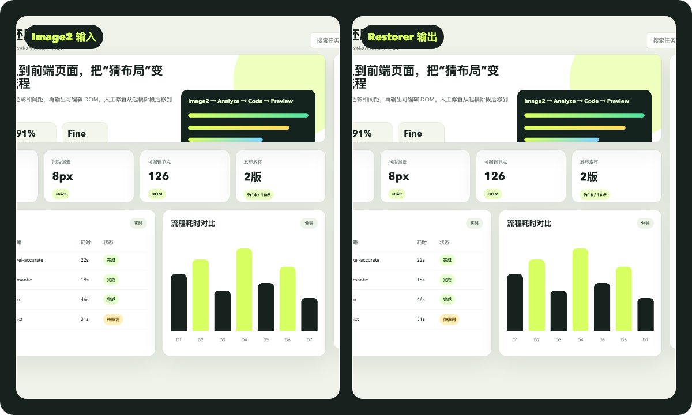

Image2 到前端，60秒讲清
这是 AI 科技博主矩阵第一条内容的完整发布包：抖音版、B站版、封面、教程、HyperFrames 工程、技能源码和可复现生成脚本。
双平台成片
当前版本使用 AI 临时旁白，已经按 60 秒节奏完成。后续替换你的真人音色后，直接重新渲染同一工程。
视觉资产
保留了 AI 生成封面、程序化封面、Image2 风格参考图、插件还原图和无插件对照图。

Image2 风格参考图：用于模拟首条视频的输入图。

Restorer 输出：可运行前端页面的视觉结果。

前后对比素材：适合视频中段和封面二次裁切。
发布流程
按这个顺序替换真人素材，就能从测试版升级到正式真人出镜版。
01用 Image2 生成参考图，或替换当前 `reference_ui.png`。
02使用技能还原 UI，生成代码和前后对比素材。
03用 `scripts/replace_voice_and_render.sh` 替换你的克隆音色。
04导出抖音/B站双版本，发布时引导评论“教程”。